Ashra and the Shattered Key
A team-built 3D puzzle-adventure game. My work combined production coordination, UI design, and environment art as we developed a playable series of puzzle-focused levels.
- Course
- Game Production
- Timeline
- March–April 2026
- Role
- Co-producer, UI designer
- Status
- Completed
- Team
- 9 people
- Tools
- Unity (engine), Maya (models), Substance Painter and Designer (textures), Blender (animation), ClickUp (organization)
- Play
- itch.io page
My contributions
- Coordinated and tracked production tasks in ClickUp as a co-producer, using assigned work and milestones to keep cross-discipline progress visible.
- Owned the UI layout assignment, designing player-facing interfaces and supporting clarity across the game.
- Contributed to the Ruins level canyon environment with two other artists; also created portal and sand textures and a cactus model.
- Worked through final UI polish as part of the last sprint, according to the production plan.
Process
Our nine-person team organized work by Programming, Art, Design, UI, Audio, and Polish in ClickUp. A shared timeline gave us a way to check the state of each discipline before major builds. My producer responsibilities ran alongside my UI and environment-art work, which made communication and task visibility especially important.
Milestones & scope
The vertical slice centered on the Ruins level: a portal-based progression path, key-fragment objective, grapple/steam/recall mechanics, a timed receptor puzzle, basic player feedback, and initial environment assets. The production plan's final status reported a feature-complete playable build across the Hub, Ruins, Heist, and Incinerator levels.
ClickUp production evidence
These are screenshots included in the team's production plan. They show our milestone timeline, workload distribution, and tasks grouped by discipline—not just the finished game.

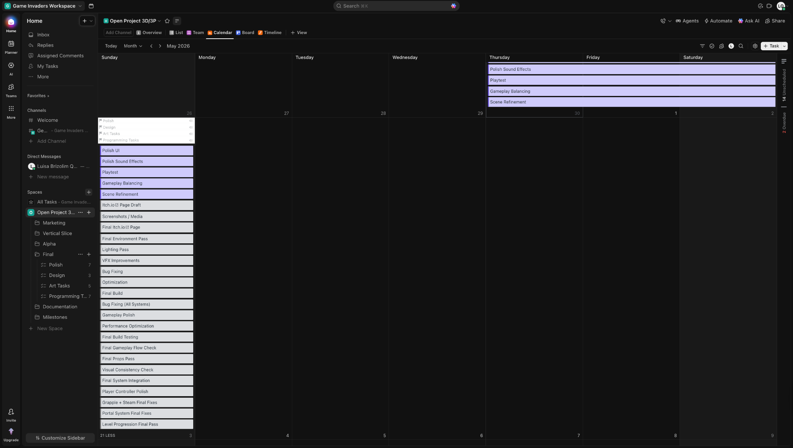

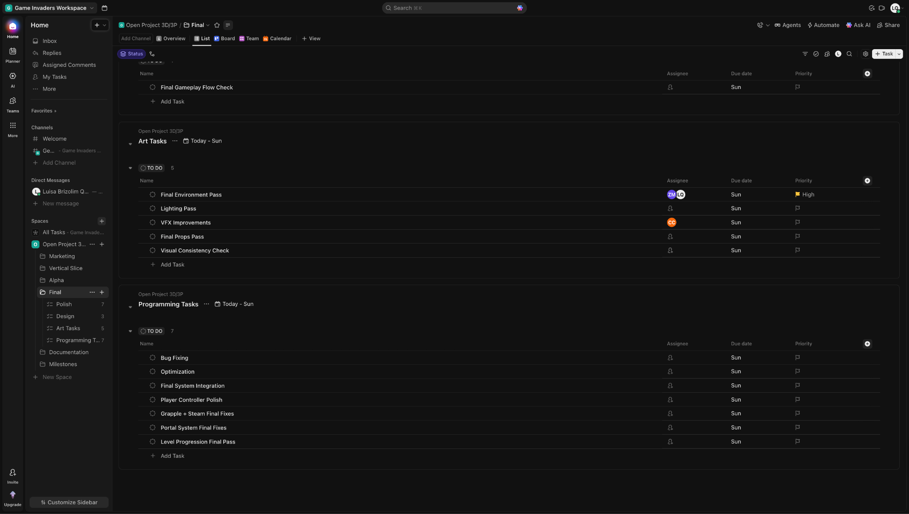
Final sprint and iteration
After the main systems were implemented, the team shifted focus away from new features and toward bug fixing, usability, audio balance, and final-build preparation. The final-week sprint backlog specifically assigned me UI polish, recorded as in progress. It also listed final playtesting, programming fixes, marketing materials, and build preparation as remaining tasks.
UI, final screens

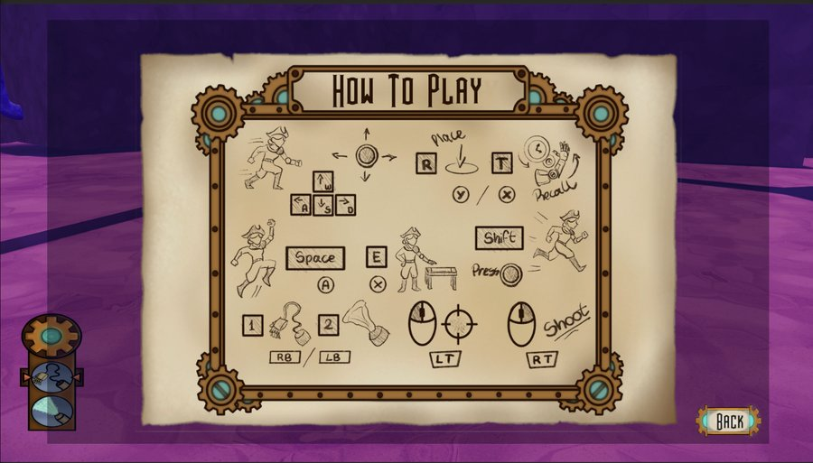
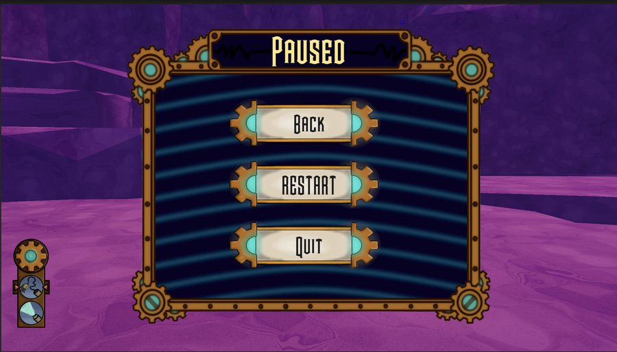
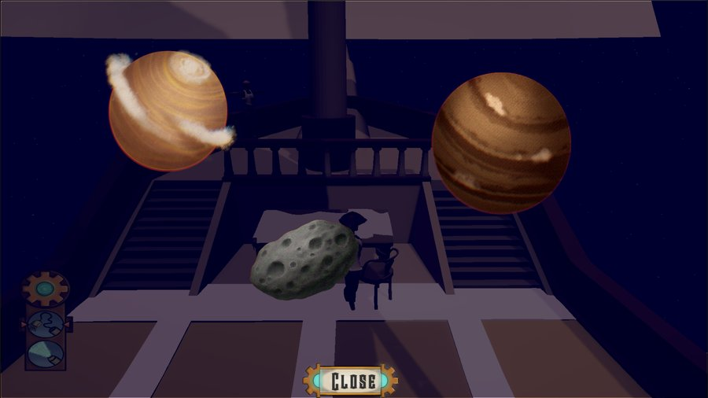
Art assets


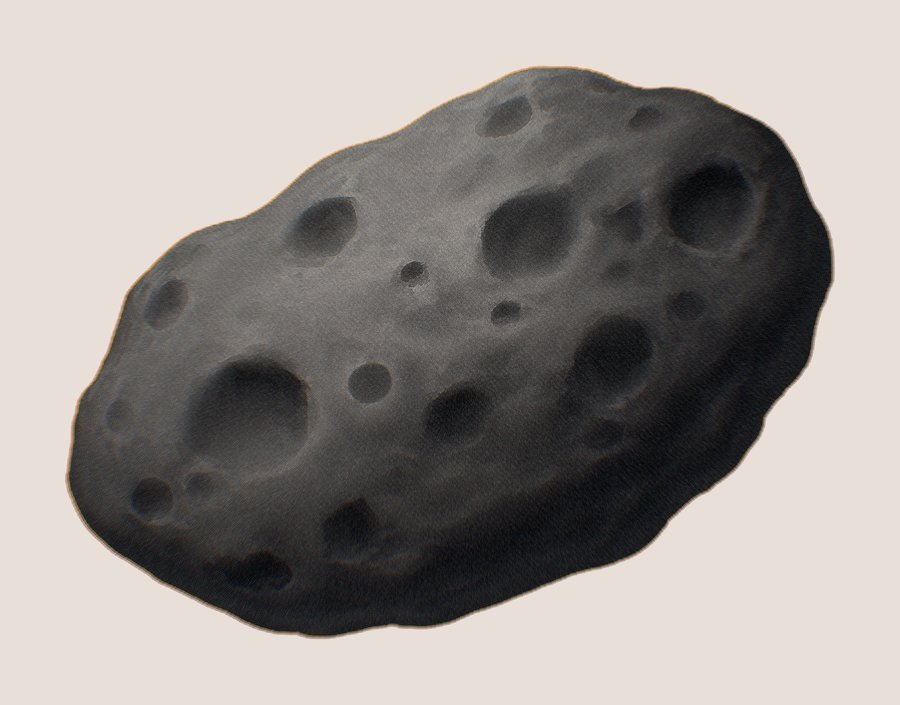
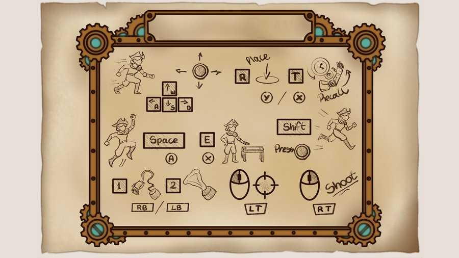

Textures


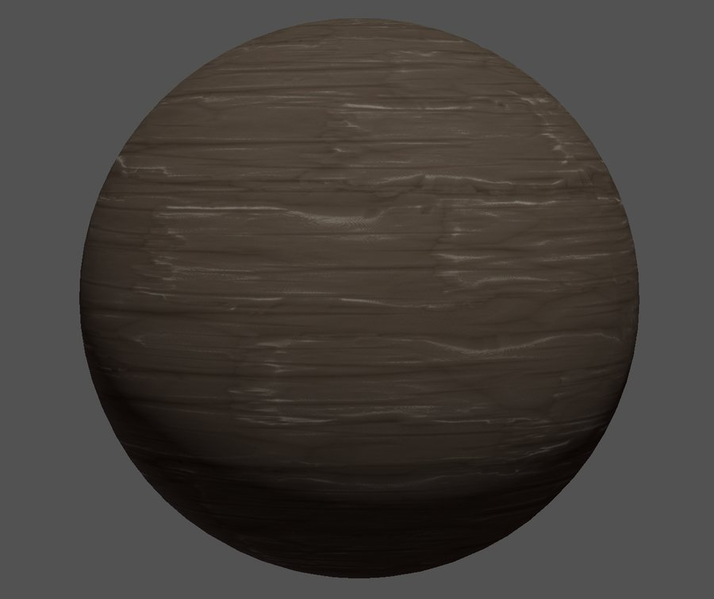
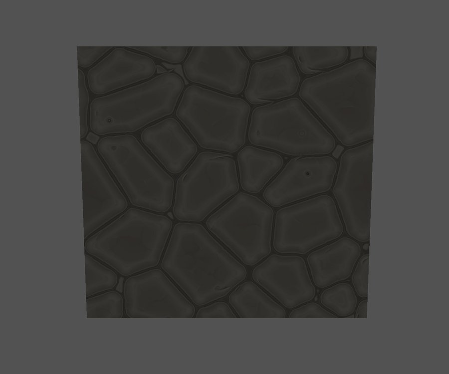
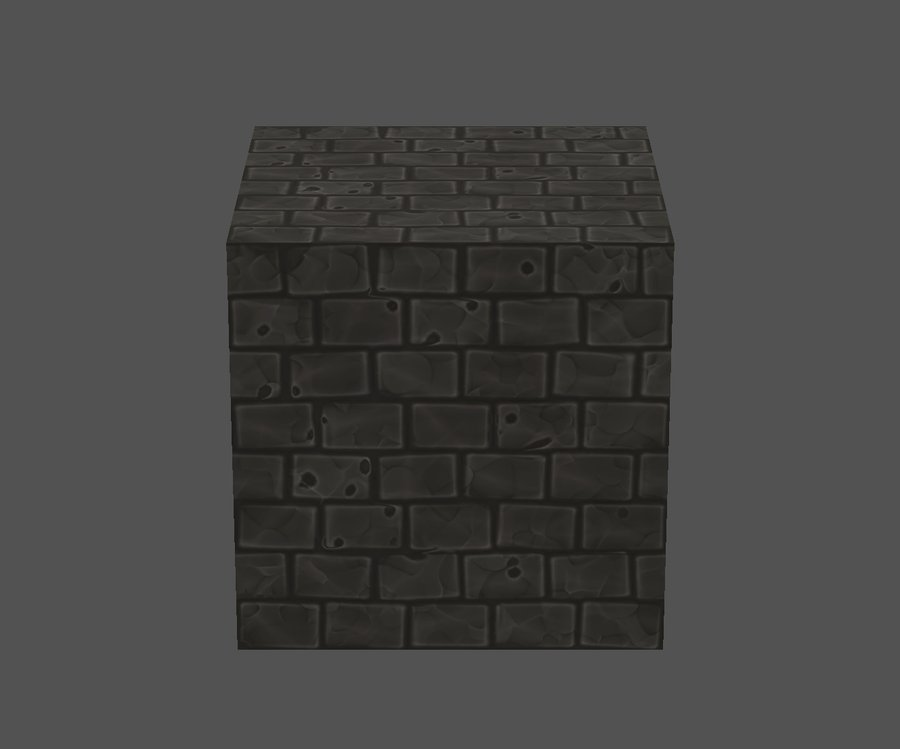
Cactus models


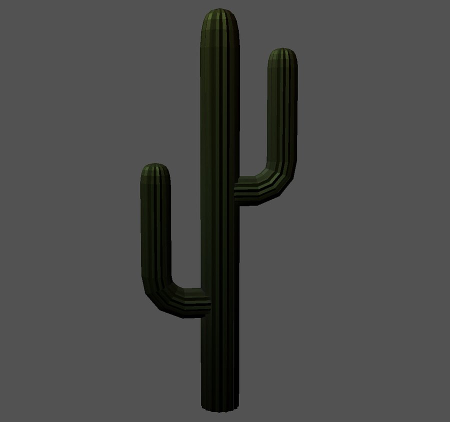
In the game

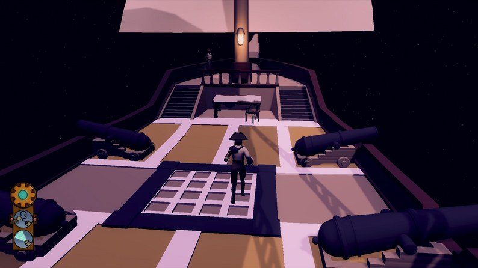


Challenges
The main production challenge was keeping programming, level design, art, UI, and audio aligned through successive builds. The plan made the handoff from feature implementation to polish explicit, while I also had to balance coordinating tasks with producing UI and environment assets.
What I learned
The project showed me the value of concrete milestone definitions and a shared backlog. Separating core-feature completion from final polish made it easier to identify what was playable, what still needed testing, and where I should focus UI improvements.
Production details and ClickUp screenshots are based on our team document, GP3 Team 02 Production Plan (v03). Completion statuses refer to what that plan recorded.